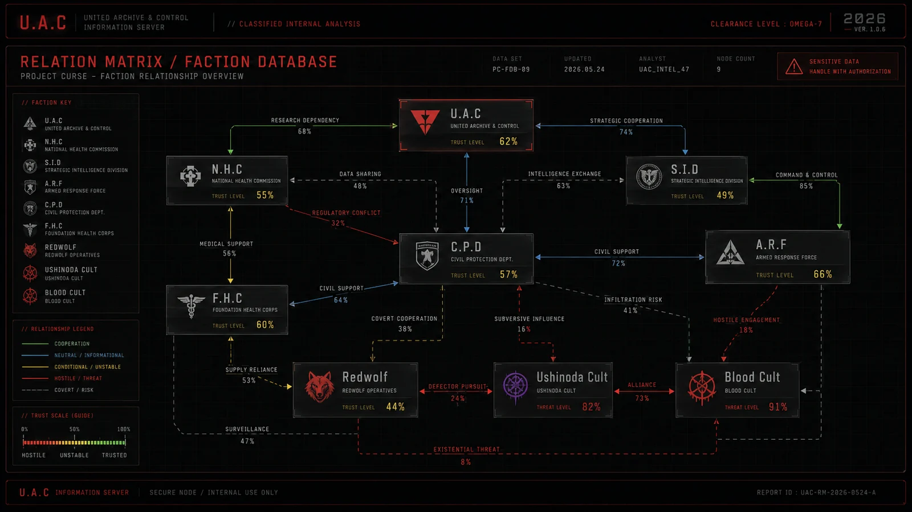

Faction_860403
U.A.C, N.H.C, S.I.D, A.R.F, C.P.D, F.H.C, Redwolf, cult networks의 역할과 충돌 구조.
VISUAL RECORD CACHE

RELATED FILES // QUICK ACCESS
압축 분류
STATUS: VERIFIED / ACCESS: INTERNAL / DAMAGE: 12%. 관련 태그는 FACTION, U.A.C, N.H.C, S.I.D로 묶이며, 이 기록은 U.A.C 정보 서버에서 긴 원문 대신 현장 열람용 요약 파일로 우선 표시된다.
세력 요약
U.A.C는 통제하고, N.H.C는 현장에 진입하며, S.I.D는 사건의 원인을 추적한다. A.R.F는 회수, C.P.D는 민간인 선별, F.H.C는 기밀 연구를 담당한다.
운영 권한
레드존 선포와 블랙존 폐쇄는 U.A.C 승인망을 거치며, 현장 작전은 N.H.C가 수행한다. 실패 지역의 자료는 A.R.F가 회수하고 S.I.D가 오컬트 흔적을 분석한다.
불안정 관계
F.H.C의 연구, 기업 장비 납품, 신디케이트 거래, Redwolf 이탈은 공식 봉쇄 체계를 계속 약화시킨다.
RELATED FILES
EXTENDED RECORD
OPEN EXTENDED RECORD
Faction_860403는 주요 세력 기록서에서 파생된 서버 열람용 확장 기록이다. 현재 상태는 VERIFIED, 접근 권한은 INTERNAL, 기록 손상도는 12%로 표시된다. 핵심 태그는 FACTION, U.A.C, N.H.C, S.I.D이며, 이 기록은 요약본을 먼저 보여준 뒤 필요한 경우 상세 블록을 펼쳐 읽는 구조로 정리되었다. [압축 페이지] - 압축 분류: STATUS: VERIFIED / ACCESS: INTERNAL / DAMAGE: 12%. 관련 태그는 FACTION, U.A.C, N.H.C, S.I.D로 묶이며, 이 기록은 U.A.C 정보 서버에서 긴 원문 대신 현장 열람용 요약 파일로 우선 표시된다. - 세력 요약: U.A.C는 통제하고, N.H.C는 현장에 진입하며, S.I.D는 사건의 원인을 추적한다. A.R.F는 회수, C.P.D는 민간인 선별, F.H.C는 기밀 연구를 담당한다. - 운영 권한: 레드존 선포와 블랙존 폐쇄는 U.A.C 승인망을 거치며, 현장 작전은 N.H.C가 수행한다. 실패 지역의 자료는 A.R.F가 회수하고 S.I.D가 오컬트 흔적을 분석한다. - 불안정 관계: F.H.C의 연구, 기업 장비 납품, 신디케이트 거래, Redwolf 이탈은 공식 봉쇄 체계를 계속 약화시킨다. [서버 해석] 이 문서는 독립된 설정글이 아니라 세계 현황, 세력 관계, 구역 위험도, 회수 기록과 연결되는 노드로 취급된다. 관련 기록을 함께 열람하면 사건의 원인, 현장 대응, 오염 확산, 기록 손상 여부를 더 쉽게 추적할 수 있다.